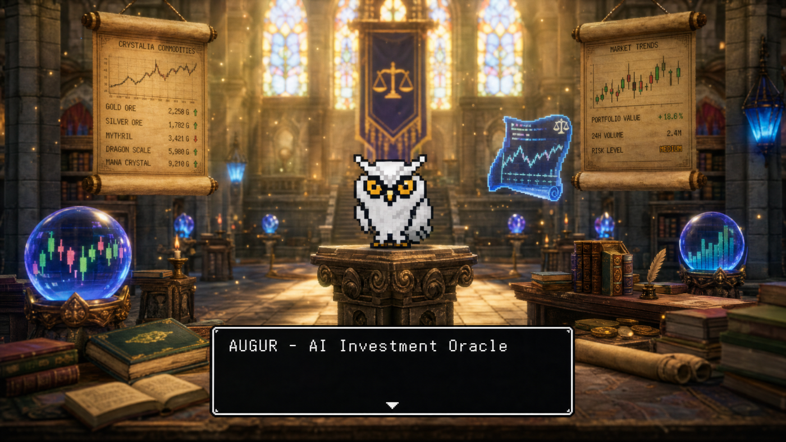

Brand World · HD-2D Oracle Hall

Octopath / Dragon Quest HD-2D × Bloomberg terminal. The owl-oracle divines the market from parchment scrolls, candlestick crystal-balls & a JRPG dialogue box — the north star for every brand surface.